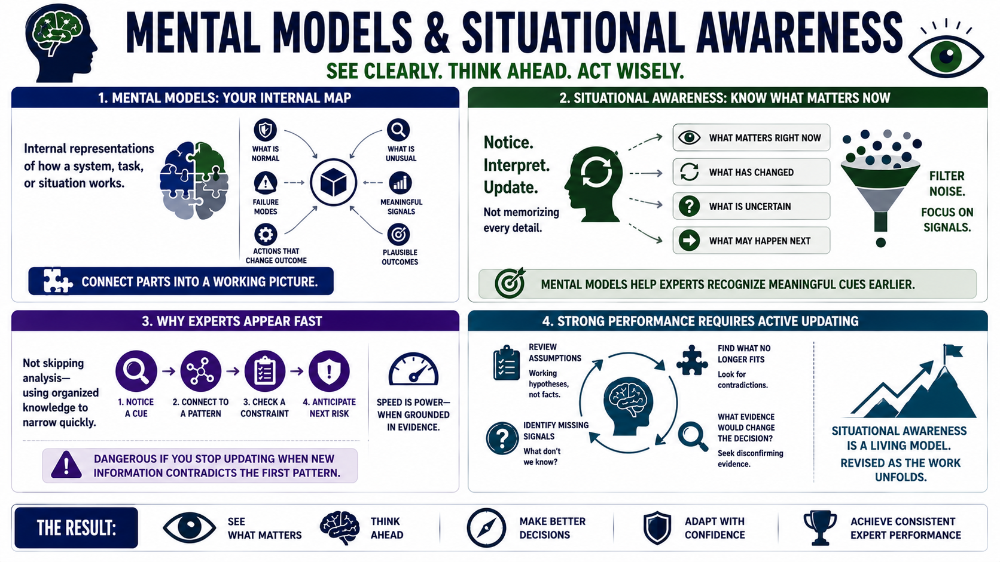

Mental Models and Situational Awareness
Connecting to LMS... Progress: in progress

Narration
Mental models are internal representations of how a system, task, or situation works. They help performers interpret what they see and decide what to do next. A strong mental model connects parts into a working picture: what is normal, what is unusual, which signals are meaningful, what failure modes are plausible, and which actions are likely to change the outcome.
Situational awareness is the practical ability to notice, interpret, and update understanding of relevant conditions. It is not memorizing every possible detail. It is knowing what matters right now, what has changed, what is uncertain, and what may happen next. Expert performers filter noise more effectively because their mental models help them recognize meaningful cues earlier.
This is one reason experts can appear fast. They are not always skipping analysis. Often they are using organized knowledge to narrow the problem quickly. They notice a cue, connect it to a pattern, check a constraint, and anticipate the next risk. That speed is useful when it is grounded in evidence. It becomes dangerous if the performer stops updating when new information contradicts the first pattern.
Strong performance requires active updating. Assumptions should be treated as working hypotheses, not permanent facts. When the environment changes, expert performers ask what no longer fits, what signal is missing, and what evidence would cause a different decision. Situational awareness is not a static snapshot. It is a living model that gets revised as the work unfolds.